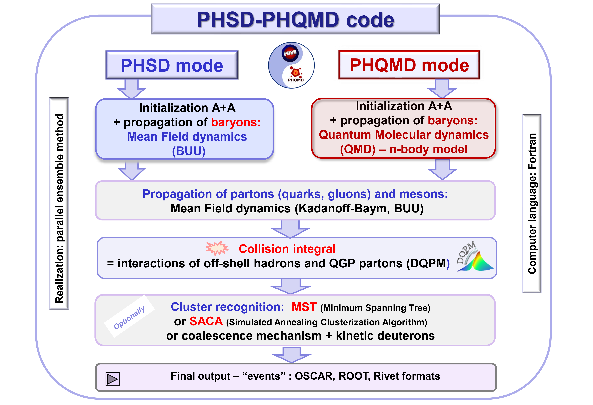
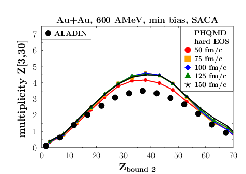
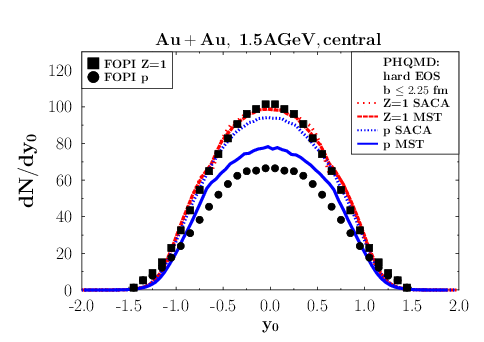

PHSD-PHQMD is a Fortran-based unified transport simulation framework for relativistic nucleus-nucleus collisions.
It combines two complementary descriptions of baryon dynamics: PHSD, which uses mean-field BUU transport,
and PHQMD, which uses a Quantum Molecular Dynamics (QMD) n-body approach. The overview image below summarizes this modeling scheme.
In both modes, the subsequent evolution includes quarks, gluons, mesons, and hadrons, propagated within non-equilibrium Kadanoff-Baym and BUU dynamics.
Interactions are handled through a collision integral for off-shell hadrons and QGP partons, with the Dynamical-QuasiParticle Model (DQPM) describing the partonic medium.
Final-state nuclear fragments can be reconstructed with MST (Minimum Spanning Tree), SACA (Simulated Annealing Cluster Algorithm), or coalescence-based algorithms.
The simulated events are exported in OSCAR, ROOT, and Rivet formats.

New Features
Special Features of PHSD/PHQMD
Possibility to study mean-field versus QMD dynamics based on one framework
Kadanoff-Baym dynamics for off-shell hadrons and partons
Phase transition from hadronic to partonic matter
Description of QGP in terms of strongly interacting quasiparticles based on DQPM in-line with lQCD EoS
Chiral symmetry restoration via Schwinger mechanism for string breaking
In-medium effects within G(T)-matrix for strangeness
Realization of n↔m reactions for specific channels
Open/hidden charm/bottom dynamics
Dark matter: dark photons
Electromagnetic probes (dileptons, photons)
PHQMD mode:
- EoS with hard, soft and soft momentum dependent potential
- Mechanisms for cluster production in PHQMD: dynamical, kinetic and coalescence
Parton transport and hadronization from the dynamical quasiparticle point of viewW. Cassing, E. L. Bratkovskaya · Phys. Rev. C 78 (2008) 034919
Time evolution of the elliptic flow v2.
Parton-Hadron-String Dynamics: an off-shell transport approach for relativistic energiesW. Cassing, E. L. Bratkovskaya · Nucl. Phys. A 831 (2009) 215-242
Partonic energy fraction with time
Parton-Hadron-Quantum-Molecular Dynamics (PHQMD): A Novel Microscopic N-Body Transport ApproachJ. Aichelin, E. Bratkovskaya et al. · Phys. Rev. C 101 (2020) 044905

PHQMD cluster multiplicity vs bound charge
Dynamical mechanisms for deuteron production at mid-rapidity in relativistic heavy-ion collisionsG. Coci, S. Gläßel, V. Kireyeu et al. · Phys. Rev. C 108 (2023) 014902

Scaled rapidity distributions compared to PHQMD
Exploring the partonic phase at finite chemical potential within an extended off-shell transport approachP. Moreau, O. Soloveva, L. Oliva, T. Song, W. Cassing, E. Bratkovskaya · Phys. Rev. C 100 (2019) 014911
The energy density for central Pb+Pb collisions
Electromagnetic emission from strongly interacting hadronic and partonic matter created in heavy-ion collisionsA. W. Romero Jorge, T. Song, Q. Zhou, E. Bratkovskaya · Phys. Rev. C 111 (2025) 064904
The impact of electromagnetic and vortical fields in relativistic nuclear collisionsLucia Oliva · Arizona State University · 27 Jan 2021Open slides
Exploring the QGP at finite baryon chemical potential in and out of equilibriumElena Bratkovskaya · Arizona State University · 20 Jan 2021Open slides
Transport coefficients of the dense QGP along the chiral phase transitionOlga Soloveva · Transport meeting (Frankfurt, Zoom) · 10 Dec 2020Open slides
Dynamical description of the partonic phase at finite chemical potentialElena Bratkovskaya · 7th International Symposium on Non-equilibrium Dynamics (NeD-2019), Castiglione della Pescaia, Italy · 16-22 Jun 2019Open slides
Electromagnetic emissivity of hot and dense matter: QGP vs charmElena Bratkovskaya · 34th Winter Workshop on Nuclear Dynamics, Deshaies, Guadeloupe · 25-31 Mar 2018Open slides
Processes in collisions of heavy ionsPierre Moreau · CBM Students Colloquium (29th CBM Week), GSI, Darmstadt, Germany · 19 Mar 2017Open slides
Chiral symmetry restoration versus deconfinement in heavy-ion collisions at high baryon densityElena Bratkovskaya · Critical Point and Onset of Deconfinement 2016, Wroclaw, Poland · 30 May-4 Jun 2016Open slides
Observables of chiral symmetry restoration in heavy-ion collisionsAlessia Palmese · International School of Nuclear Physics, Erice, Italy · 21 Sep 2016Open slides
Tomography of the Quark-Gluon Plasma by charm quarksElena Bratkovskaya · Heavy Flavor Working Group Meeting, Berkeley Lab, USA · 18-22 Jan 2016Open slides
Electromagnetic emissivity of hot and dense matterElena Bratkovskaya · New Horizons in Fundamental Physics, Makutsi, South Africa · 23-28 Nov 2015Open slides
The QGP dynamics in relativistic heavy-ion collisionsElena Bratkovskaya · Kruger2014 workshop, South Africa · 1-5 Dec 2014Open slides
From hadrons to partons and backElena Bratkovskaya · EMMI Nuclear and Quark Matter Seminar, GSI, Darmstadt, Germany · 9 Jul 2014Open slides